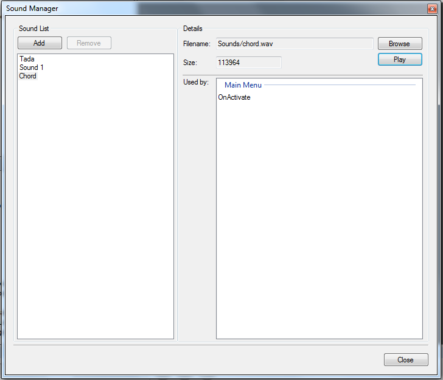
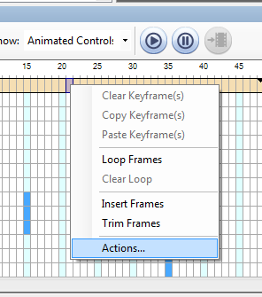

Sound Playback in OtterUI is accomplished by creating a Sound Action on an animation frame, much the same as you would create a Message Action. Unlike Message Actions, however, Sound Actions use only the ISoundSystem interface to load, unload and play sounds.
To add and play sounds in OtterUI you must create one our more sounds, add one or more Sound Actions to an animation, and finally implement the ISoundSystem interface.
Create Sounds in the OtterUI Editor
- From the Scene menu click Sounds...
- Click Add. A new sound will be created and added to the list of sounds
- Select the new sound and hit F2 to edit the name. The sound's name must be unique
- (Optional) Select the sound, and in Details pane and browse to a sound file.
Note: If a sound file is not specified, the sound's name will be used in identifying the sound at runtime.
- Repeat steps 2 through 4 as needed
- Hit OK

Create a Sound Action
- Right click on the main channel of an animation and select Actions...

- In the Actions Editor select Play Sound from the Add Actions dropdown
- Select the newly created sound action and in the properties window select Sound and expand the dropdown box in its value field.
- Select the appropriate sound to play
- Edit the Volume field to set the playback volume
Implement the ISoundSystem Interface
See the Sound System tutorial for information on how to implement the ISoundSystem interface
Created with the Personal Edition of HelpNDoc: Full-featured multi-format Help generator